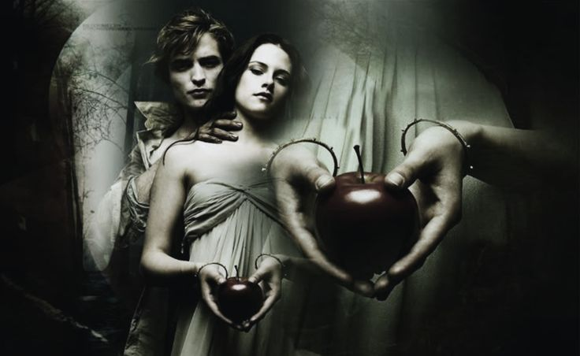

Crepúsculo
A estudante Bella Swan conhece Edward Cullen, um belo, mas misterioso adolescente. Edward é um vampiro, cuja família não bebe sangue, e Bella, longe de ficar assustada, se envolve em um romance perigoso com sua alma gêmea imortal.
